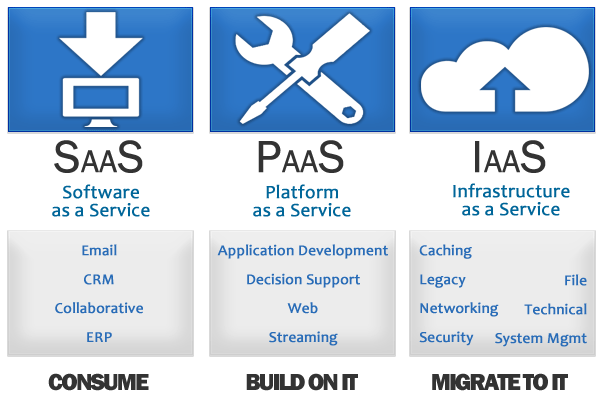

Introduction to
by Dieter Hubau and Maarten Fuchs
Cloud and PaaS Competence Center
© 2016 JWorks
Why are we here

Show the benefits of a PaaS
Discover Cloud Foundry
Explain the Cloud Foundry Architecture
Add value to the customer and innovate
What is Platform as a service

A cloud computing service offering
Allows you to manage and run applications
Without worrying about infrastructure
Where does a paas live
Infrastructure as a service
Amazon Web Services

Windows Azure

OpenStack

VMWare

Google Compute Engine

PAAS
SAAS
Where does a paas live
Which services should a paas offer

develop / test / deploy / host / maintain applications
multiple-tenant architecture
support for different development languages
built-in support for scaling, load balancing and failover
integration with web services and databases through standards
Why do we need a paas
public class WhatAClass {
public static void main(String[] args) {
System.out.println("Hello");
}
}